Cruising the Galapagos Islands
Going to the Galapagos Islands had never featured in our immediate travel plans, so it was very unexpectedly that it became one of the highlights of our year around the world. Kelvin's mum, Carol, decided to celebrate her 60th birthday doing something memorable and a cruise through the islands sounded like that sort of thing. It was also an invitation (and privilege) we couldn't refuse.
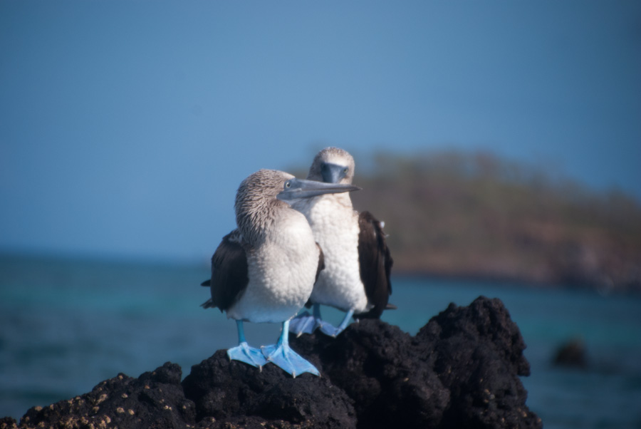
After much deliberating and worrying the Beagle was chosen, a beautiful looking boat with two sails, in which we would be spending a week sailing from island to island in search of many evolutionary wonders.
Carol planned the whole thing, which meant that we were spared all the stress of choosing not only which boat, but also whether it would be cheaper to book in advance or would a last minute deal miss out on the top quality boats? Or which itinerary to choose, north or south? So this was gladly the first time in nearly a year that we had to make no choices and trusted Carol wholly with planning her birthday bash.
Day 1 - Finally and full of expectations, we flew from Quito in Ecuador onto the island of Santa Cruz in the archipelago of the Galapagos Islands. A short while after landing we saw The Beagle for the first time. Sharing the bay with couple of other smaller boats, it's tall double masts swayed in the calm waters, and the whole group couldn't wait to get on board and check out where we would be spending the next eight days.
An inflatable speed boat which is called a Panga, awaited to transfer us onto the Beagle, and our naturalist guide for the week - Daniel - led us towards it. On board we were received by the crew with an amazing welcome piña colada, and after meeting the crew we were shown our cabins and given some time to settle in.
The cabins were actually quite nice, they had a double and a single bunk, an ensuite bathroom with a hot shower, a fan, air con and drawers to unpack stuff into. The air con took some getting used to as it sounded like the motor was inside the room but overall we all slept pretty well. Apart from the night of the storm when the boat rocket so violently I almost learnt about seasickness.
Our first three course meal of the week was enjoyed while sailing towards Bachas Beach. There we got to see pelicans take flight, sitting on the sand we watched as two bright pink flamingos tip toed around a lake displaying some interesting territorial behaviour, and later on we spotted grey Iguanas and red Sally Lightfoot Crabs who scattered all over the surrounding lava rocks.
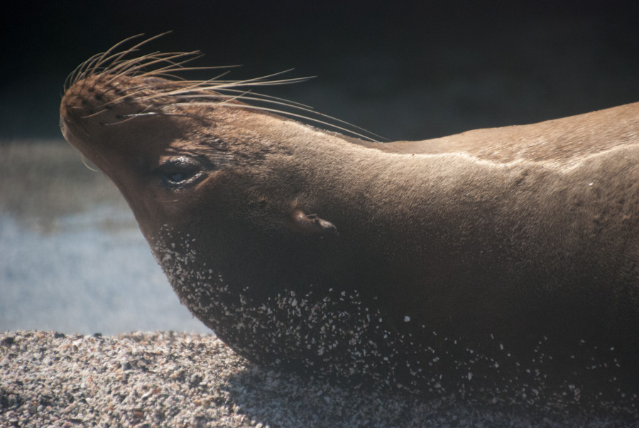
It was hot and humid so we just wanted to get in the water and have that first swim in the protected waters of the national park. After came cocktail no 2, a snack, shower and a briefing before dinner was served. The briefing was a daily occurrence which gave Daniel the opportunity to explain what we would be be doing the following day. The plan invariably combined snorkelling and hiking looking at sociable animals who have never met a predator before, several three course meals, cocktails and left time for ad hoc afternoon naps. We just couldn't argue with that.
Carol had chosen to do the northern circuit of the Galapagos Islands which included visiting Genovesa, Santiago and Isabella Islands, which are inhabited by wildlife only. The northern circuit is less busy than the southern which sees the majority of the boat traffic, so for the whole week we saw but a couple of other boats, so that most of the time there was nothing but nature around us.
Day 2 - was Carol's birthday so she got to get up very early to eat a delicious breakfast and open presents, followed by a visit to Genovesa Island. Here, hundreds of birds nest along the cliffs, on the barren floor or in the naked trees. The huge bird colony was composed of the strangest birds I have ever seen - red footed boobies, NASCAR boobies and frigate birds - all minding their mating business and posing from all angles as we photographed them from so close we could nearly touch them.
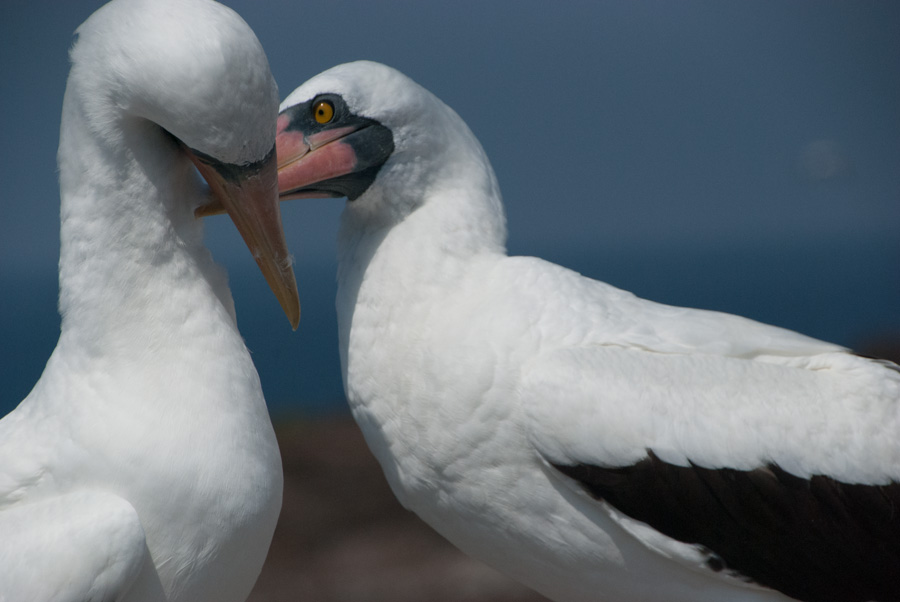
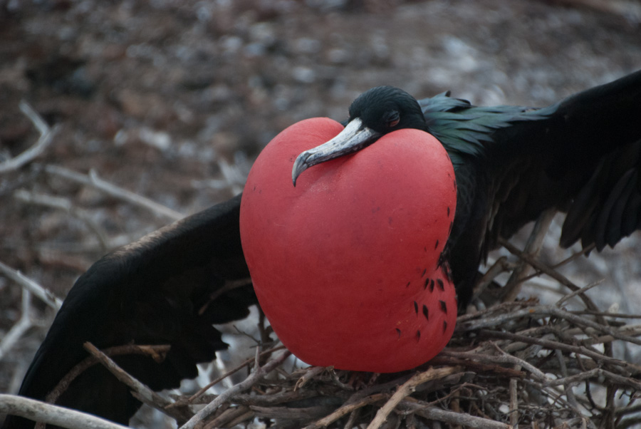
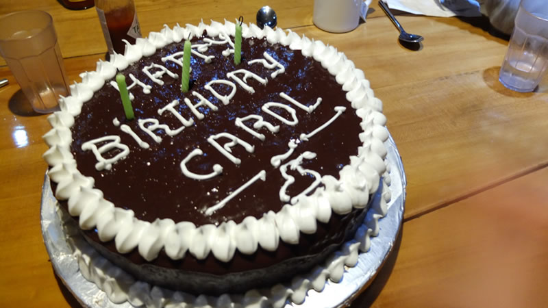
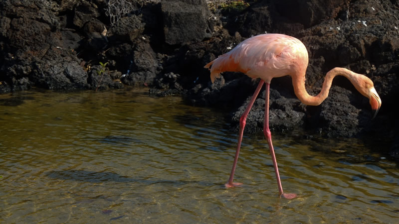
After walking came snorkelling. The sessions of the day were replete with fur seals and stingrays who similarly to the birds didn't mind our presence, persistence, or a GoPro shoved in their faces. After returning to the boat there were no doubt more cocktails and even a birthday cake especially baked on board by our amazing chef, who by the way, managed to surpass any expectations anyone might have had on the quality of high sea food. Not a bad birthday for Carol.
On day 3 - we left Genovesa and sailed to Santiago Island. In the morning we took the Panga to shore and went for a walk along the lava flats where met up with hundreds of marine iguanas. These guys disguised so well against the black rock that we really had to watch our step not to walk on one. They also piled on top of each other soaking the sun rays and intermittently projecting snot all over each other in loud sneezes. It was quite disgusting, but nonetheless fascinating behaviour.
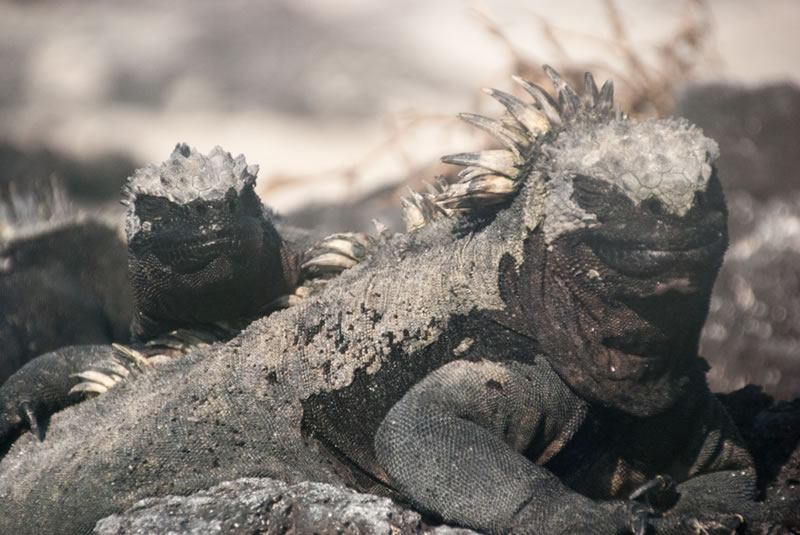
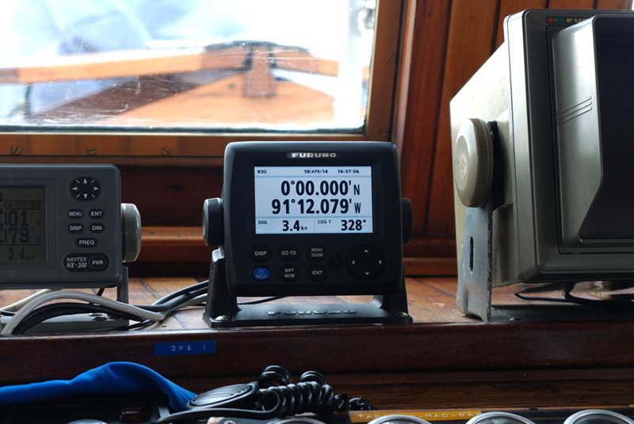
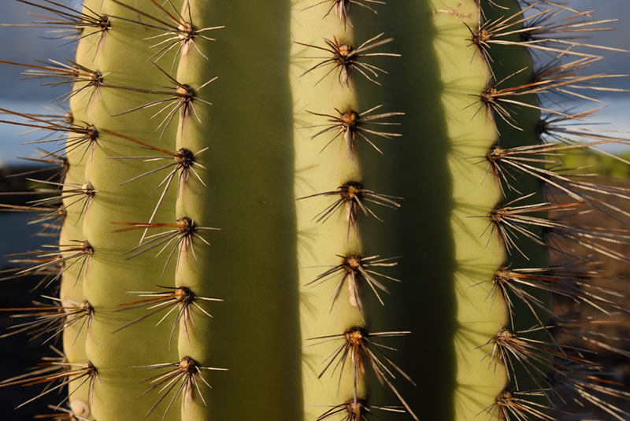
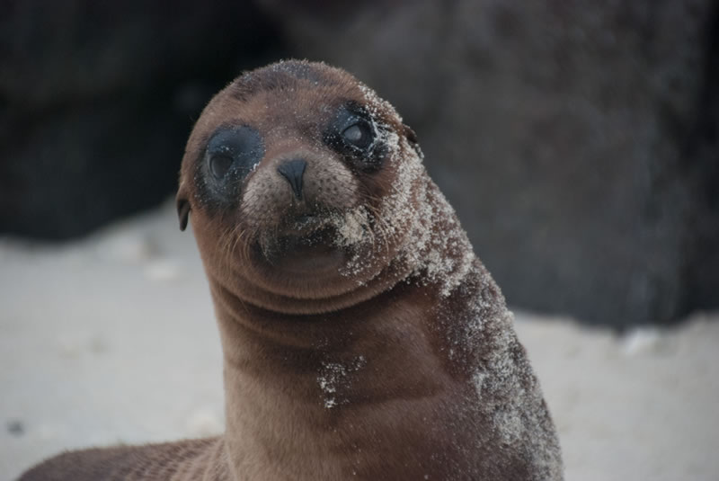
As we walked further along the coast we reached a playground for fur seals. Here they had fun using the tunnelling between sea caves as reverse slides, then surfacing and sinking inside water holes with every wave. Others simply twirled and played with each other in the rise and fall of the waves inside open top cave pools while we watched from above like into a well. But what they are best at is surfing the powerful green waves, we watched as their bodies glided inside through the glassy water, again and again. It looked like so much fun.
Day four - topped it all. Not only we had some very special encounters with fur seals who allowed us to swim so close up that we were able to look into their big round eyes, and see through them into their seal soul, but we got to see Galapagos Penguins, resting and soaking the sun, as would the northernmost penguins in the world.
We didn't think it could get any better. Maybe if we had seen Giant tortoises on our afternoon hike in Tagus Cove, but the huge Galapagos (after who the islands were named after) are not only shy but very endangered and hide deep inland these days. Still, we had a stunning walk with moonscape panorama views of the interior of the island and the cove where the anchored Beagle awaited us with mojitos.
The rest of the week brought more barren lava fields, ladies-finger-banana cactus, snotty iguanas, colourful footed boobies, inflated frigates, lots of hungry sea turtles and....we finally got to swim with the penguins! These fast swimmers were incredible to watch as they chased their lunch and changed course so suddenly that it would have been hilarious to watch this bunch of snorkellers attempting to keep up with them.
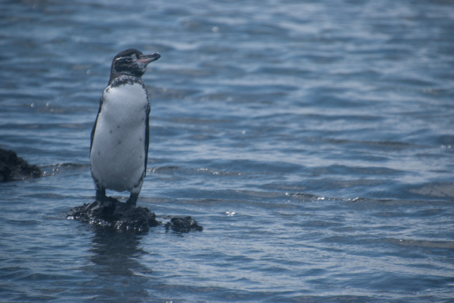
The snorkelling in the Galapagos is in a league of its own. It can't be compared to anywhere on earth, because nowhere else can deliver the close encounters with the wildlife, a unique characteristic derived from the lack of predators. The coral is non-existent, the visibility is poor most of the time, but the abundance of animals and the opportunities to interact with them is unrivalled.
The Beagle ran on motor for most of the week but the wind picked up a couple of times and the sails went up, it was a beautiful very slow sight. We sailed across the equator line twice, first time chasing huge Mola molas and the second time we were treated to a swim at zero degrees latitude.
At the end of the cruise we all had had such a good time, no one wanted to pack up and leave the Beagle. The food, the company, the crew, Daniel, the cocktails and the wildlife were all outstanding.
There are 250 boats licensed to do these trips around the islands, however we felt like Carol had chosen the most special of all, and nature really put on a show for our eyes only.
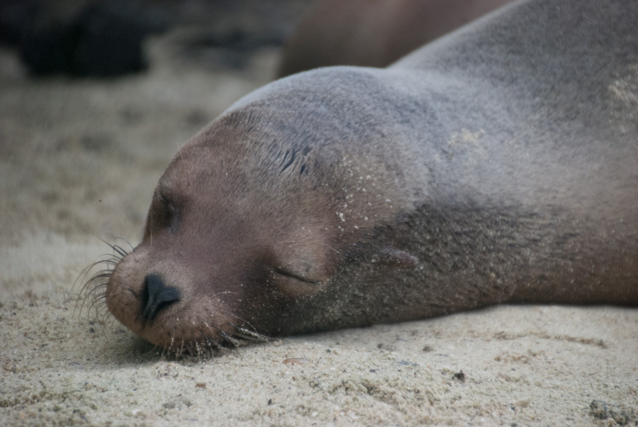
It took a couple of days after leaving to stop daydreaming of life on The Beagle during which there was more exploring to do. Using the town of Puerto Ayora as our base for a few more days we took the chance to surf the wild side of Tortuga Bay, and explore it's sheltered mangrove side teeming with baby reef sharks who slowly swam around our ankles in the shallows. And we finally managed to see giant tortoises wandering slowly around a Rancho, some of them were over 100 years old and counting. There aren't many animals in the world capable to outlive most humans, something we couldn't help to contemplate in wonder.
We then headed to Puerto Moreno on the Island of San Cristóbal where we were chased by the territorial sea lions who lazed along the pier, and got to snorkel with sharks at Kicker Rock.
We left the islands feeling lucky to have been able to see such a rich ecosystem and had such an incredible experience, the sort that will be hard to beat.
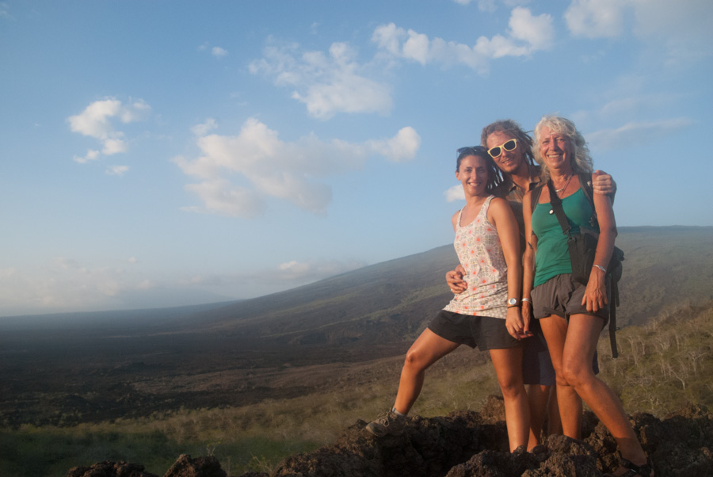
Comments